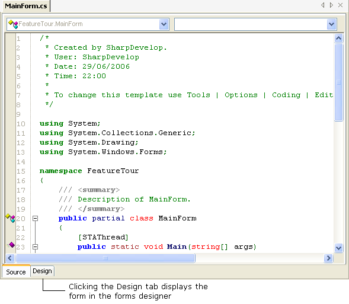
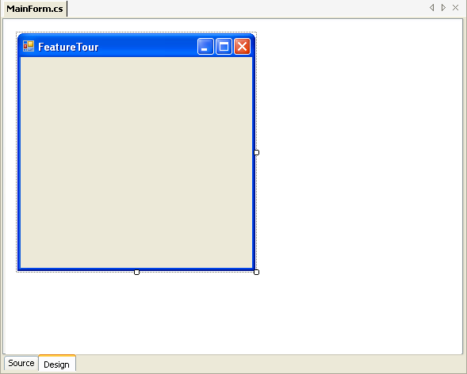
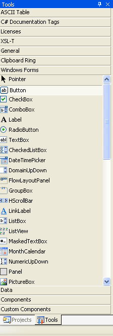
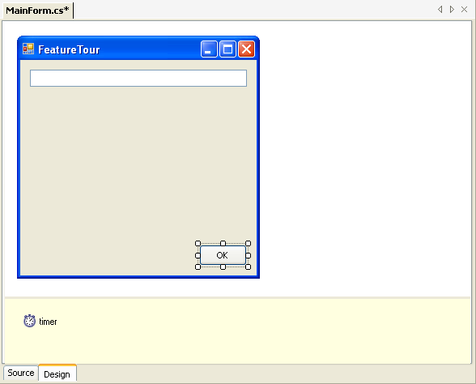
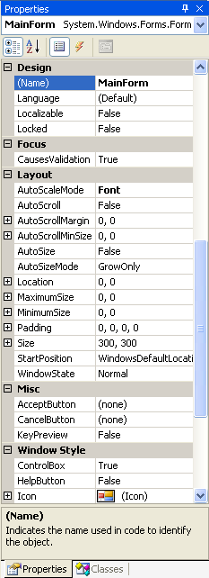
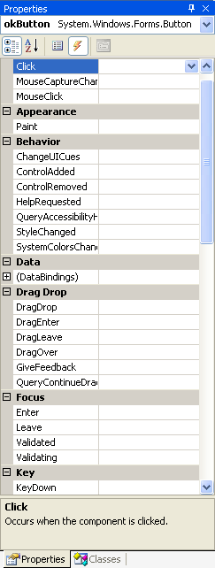
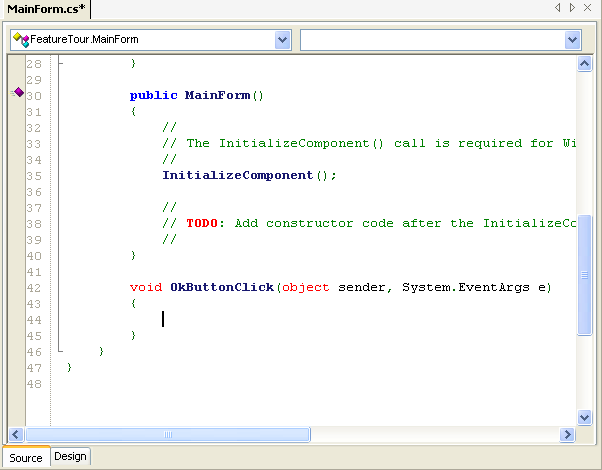

SharpDevelop has a forms designer that allows you to visually design forms and user controls written in C#, VB.NET or Boo.
To open the forms designer click the Design tab at the bottom of the form's source code window.


Controls can be added to the form from the Toolbox window. From the View menu select Tools.
This opens up the Toolbox window. The controls you can add to the form exist in tabs inside the toolbox:

| Tab | Contents |
|---|---|
| Component | Displays a list of non-visual components that can be added to your form (e.g. FileSystemWatcher, NotifyIcon and Timer). These are added to the non-visual design area at the bottom of the forms designer. |
| Custom Components | Displays a list of Windows Forms Controls that are in the current project, any referenced project or any referenced assembly. |
| Data | Displays a list of data objects that you can add to your form (e.g. DataGridView, DataSet and OleDbConnection). |
| Windows Forms | Displays a list of the standard Windows Forms Controls (e.g. Button, ListView, TreeView and Label). |
Click a tab to expand it and see what controls it contains. To add a control to the form you can either drag it or draw it onto the form. To drag, click the control with the left mouse button and whilst holding down the left mouse button move the mouse to your form, release the mouse button to drop the control onto your form. To draw it onto your form, select the control in the toolbox window by left clicking it with the mouse, no need to hold the button down at this point, then click where you want the top left corner of the control to be located on the form, then whilst holding the down the left mouse button drag to where the bottom right corner of the control should be located. Once on the form you can visually resize it, change its location and modify its properties. In the screenshot below a Button, TextBox and Timer have been added to the form, with the Timer shown in the non-visual component area of the forms designer.

A control has properties that can be set at design time, changing how the control looks and reacts (e.g. text, font and background image on a button). These properties are displayed in the Properties window. From the View menu select Properties to open the Properties window.


The properties are displayed for the currently selected control. You can view properties from another control by selecting it in the designer or selecting the name of the control in the drop down list at the top of the Properties window.
Each Windows Form control has events that you can catch and respond to. To see the events a control exposes, select the control in the designer and select the Events tab in the Properties window.

To generate an event handler, select the event in the Properties window, enter a name, or leave it blank to accept the default name, and then double click the property or press the enter key. The forms designer will then create an empty event handler method and switch to the form's source code ready for you to type in your code. The screenshot below shows the code generated for a button's Click event.
